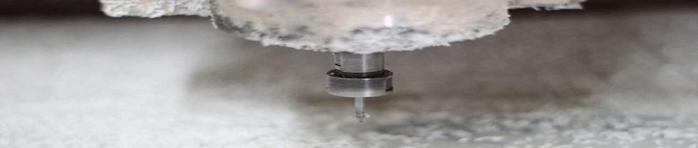

网站位置—佛教故事
雕刻机使用球头刀有那些优势
发布时间:2014-06-16 14:48 点击次数:129次

1）可以获得更加平稳的加工状态：使用球头刀进行加工时，切入角是连续变化的，几乎没有突变的现象，这样切削力的变化也就是一个连续的变化过程，这样加工时可以保证切削状态更加稳定，表面光洁度更高。
2）球头刀是进行曲面半精加工和精加工最理想的刀具：我们使用的主轴电机抵抗轴向力的能力差一些，所以，一般不能使用球头刀进行粗加工（轴向切削力过大），而在半精加工中，使用球头刀是非常好的。使用球头刀进行半精加工后，加工残料少，这样更有利于进行下面的精加工。半精加工的路径间距一般是精加工间距的两被，如果是使用平行截线的方法，最好和精加工走刀方向成90度。
降低了实际切削半径：就像使用牛鼻刀一样，使用球头刀减小了实际切削直径，降低了切削线速度，减小了切削加工时的切削功率和切削扭矩，更有利于主轴电机在更好的状态下进行加工。
1）可以获得更加平稳的加工状态：使用球头刀进行加工时，切入角是连续变化的，几乎没有突变的现象，这样切削力的变化也就是一个连续的变化过程，这样加工时可以保证切削状态更加稳定，表面光洁度更高。
2）球头刀是进行曲面半精加工和精加工最理想的刀具：我们使用的主轴电机抵抗轴向力的能力差一些，所以，一般不能使用球头刀进行粗加工（轴向切削力过大），而在半精加工中，使用球头刀是非常好的。使用球头刀进行半精加工后，加工残料少，这样更有利于进行下面的精加工。半精加工的路径间距一般是精加工间距的两被，如果是使用平行截线的方法，最好和精加工走刀方向成90度。
降低了实际切削半径：就像使用牛鼻刀一样，使用球头刀减小了实际切削直径，降低了切削线速度，减小了切削加工时的切削功率和切削扭矩，更有利于主轴电机在更好的状态下进行加工。
降低了实际切削半径：就像使用牛鼻刀一样，使用球头刀减小了实际切削直径，降低了切削线速度，减小了切削加工时的切削功率和切削扭矩，更有利于主轴电机在更好的状态下进行加工。
上一篇：雕刻机夹具和工件的安装要作到那些要求
下一篇：没有了